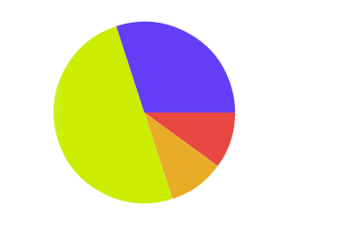
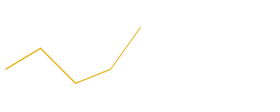

Data Driven Canvas
Bar chart

Let’s revisit the bar chart. Assuming we have the rectangle and text functions created in the previous lesson, let’s go up a level and make a bar function:
1 2 3 4 5 6 7 8 9 | |
In ready we’re calling our new function bar. bar simply takes an X and Y like you would see on a normal bar chart. In the bar function, we call rectangle, but we manipulate the data first. We pass in a purple color. Then, the X for rectangle is always 0. That means the bars always start on the left side. Then, the y position is x12. That means that the first bar is at 12, second is at 24, third is at 36. So each bar will be below the previous one. For the width, we’re using the y10. So if a y value is 10, it will be 100 pixels wide. Last, our height is always 10. So if height is 10 and the y position is x*12, we’ll have two pixels of space between each bar.
Now, let’s loop over a data array:
1 2 3 4 5 6 7 8 | |
We wrote our bar function so it would be really easy to use once we have data. Looks good!
Take a moment and experiment with the colors, data, and sizes of the bar chart. Find something that looks nice, then let’s share our graphs with the class.
Pie chart

Next up, let’s do a pie chart. Pie charts are a little trickier because a slice of the pie is a line and two arcs. So we’ll need to use some trigonometry to draw it:
1 2 3 4 5 6 7 8 9 10 11 12 13 14 15 16 17 | |
This is getting more complicated. Look at ready first. Here we’ve got our data, but they are all fractions that add up to 1, since a pie chart is made of percentages of a whole. Next, we need a progress variable that will track our progress around a circle. This is because to draw a slice of a pie chart, we need to know where to start the slice.
Inside pie we have a couple new instructions. The beginPath tells canvas that we are starting a series of commands that will come together to form a path. Next, we set our fill style. We’re using hsl because then we can just use progress to pick a hue and have consistent saturation and lightness. Next, we move to 150,150 which will be our chart’s center. Then we do an arc. Arcs take the following parameters: center x, center y, radius from center, starting radians, ending radians. Radians measure the progress around a circle (like degress, but instead of 0 to 360, it’s 0 to 2*pi). We want our arc to start at progress and continue until progress+value. Once we’ve moved along that arc, we fill the slice.
Experiment with some different colors, positions, sizes, and more. Find a chart style you like, then we’ll share them with the class.
Line chart

Last up, we’ll do a line chart. Like a bar chart, line charts will just need x and y values, but we’ll draw a line instead of bars:
1 2 3 4 5 6 7 8 9 10 11 12 13 14 | |
Not as bad as the pie chart. All a line chart needs is the x and y, then we set up our color, make the line a bit wider, and call lineTo and then tell the context to stroke the line.
Try out a few different values for the line variables, and then we’ll share with the class.
Experiment
Try adding text to a chart, or a new chart type (like an area chart, or a scatter plot). At the end, we’ll share our results with the class.